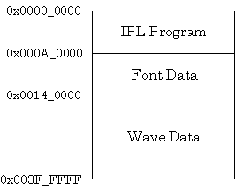

The commercial version of the 64DD (the consumer-use drive) contains built-in mask ROM. This mask ROM is called DDROM.
DDROM contains the following data:

The development-use 64DD does not have built-in DDROM, but font data and wave data are supplied on the IPL ROM Cartridge.
The IPL program is used to transfer special development IPL to the emulation ROM and to write to the N64 Flash ROM cartridge. In addition, when emulating the 64DD on the hard disk, DDROM can be used when there is no IPL ROM cartridge since the 64DD emulation application supports DDROM.
IPL is the program for booting a game from the 64DD disk. This program executes when power is supplied to the N64 Control Deck if a Game Pak is not inserted in the Control Deck at that time.
The main roles of the IPL program are listed below:
All these processes must be performed on the application side when a ROM cartridge is inserted in the N64 since the N64 is started with a non-IPL ROM cartridge.
Font data for both alphabetic characters and kanji characters is prepared in DDROM for the display of error messages. Three functions are available to help determine which address each font starts from.
The start address 0x000A_0000 for font data in DDROM is defined as DDROM_FONT_START in the header file leo.h.
Both 32KHzADPCM and 16KHzADPCM compression format data (.aifc) is available as waveformd data for sounds.
The start address 0x0014_0000 for wave data in DDROM is defined as DDROM_WAVETABLE_START in the header file leo.h.
Nintendo® Confidential
Copyright © 1999
Nintendo of America Inc. All Rights Reserved
Nintendo and N64 are registered trademarks of Nintendo
Last Updated March, 1999